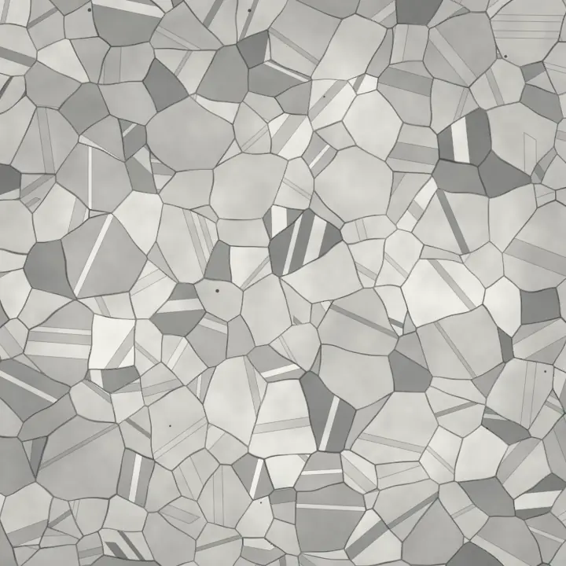
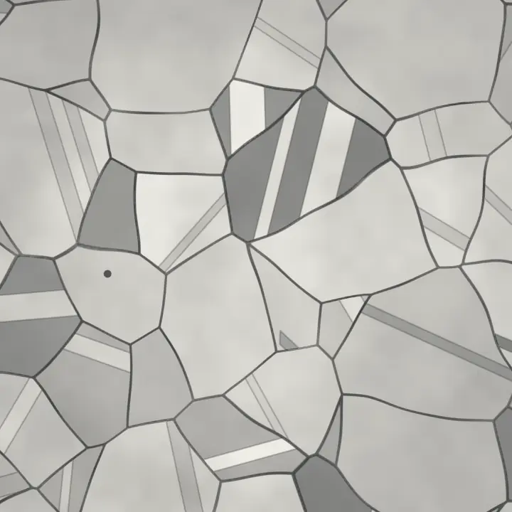
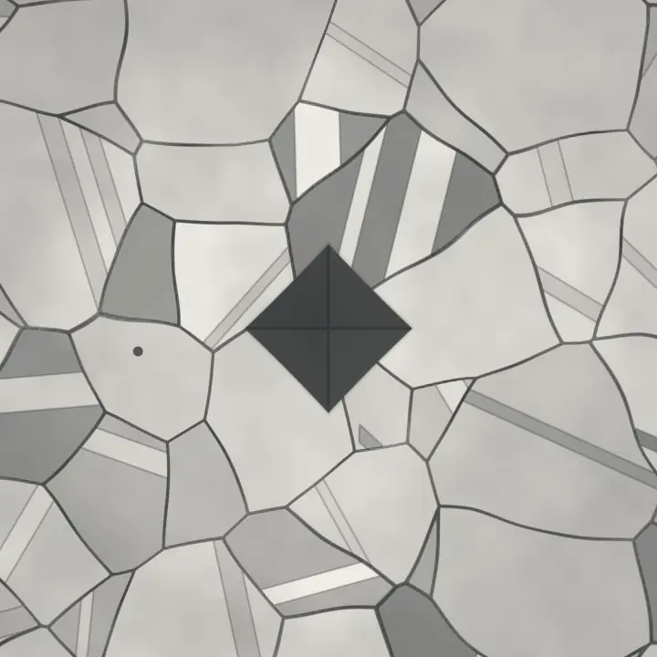
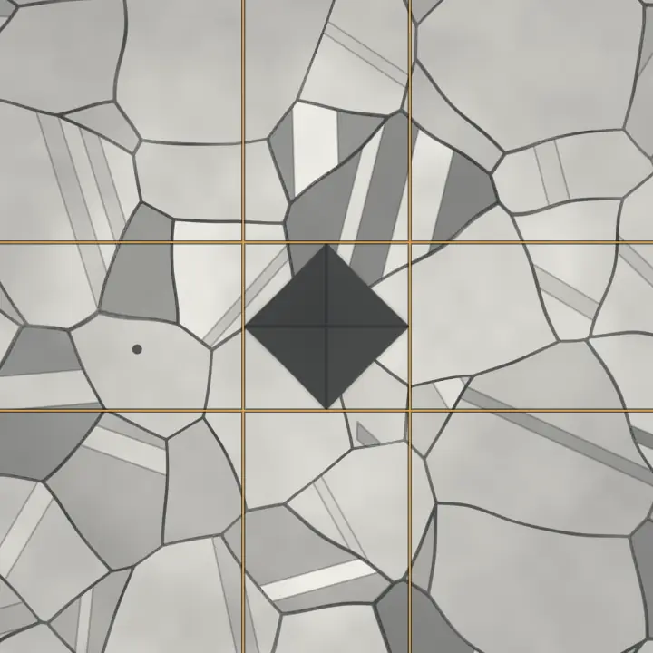
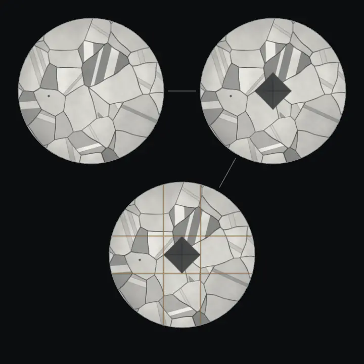
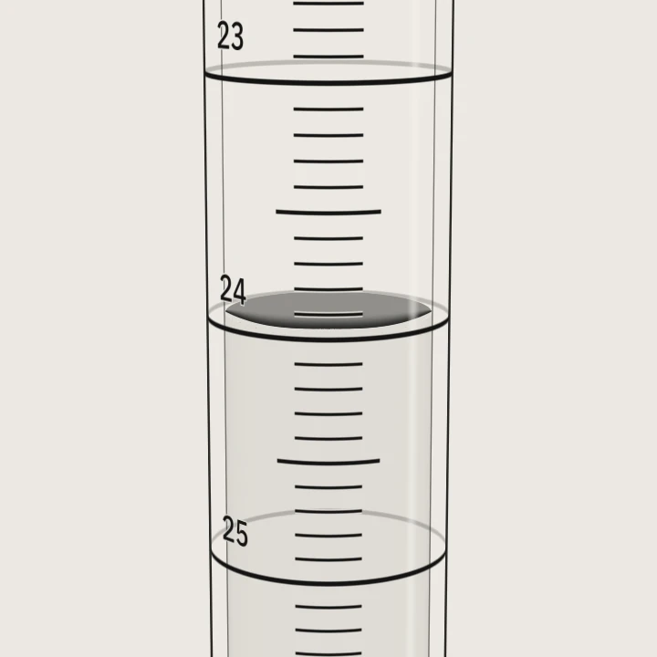
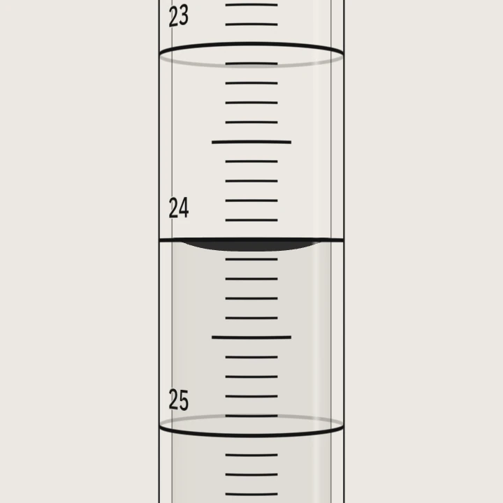
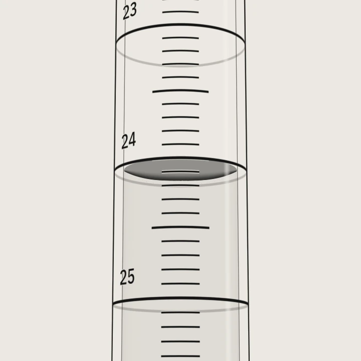
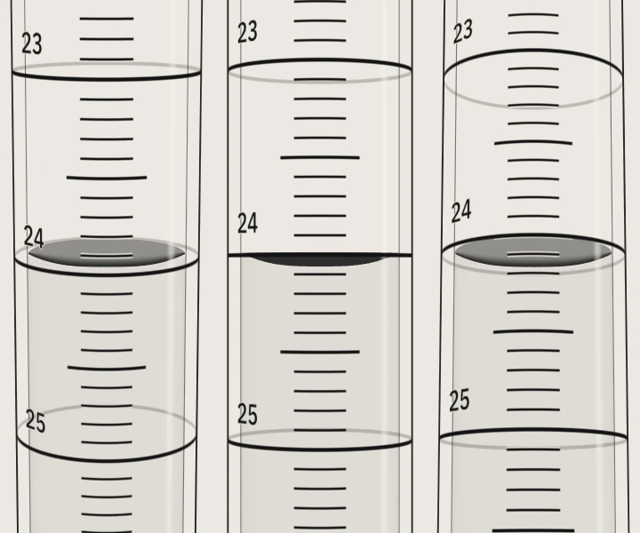

José A. Fernández Abreu Materials & Process Engineer Bilingual
Under the finish, the structure. Under the number, the record.

I engineer special processes for aerospace landing gear. I got here through water chemistry, pharmaceutical microbiology, environmental testing and IT support, asking one question the whole way: is this number true, and what has to happen because of it?
Now · Oct 2026 — Senior Engineer, Materials & Process Technologies, Collins Aerospace
01 — Engineering · 2026–present
Now I answer for the process.
- Collins Aerospace, Landing Systems Senior Engineer, Materials & Process Technologies 2026–present
- Collins Aerospace Chemical Process Laboratory 2026
The deliberate turn. In every lab before this one, the solution in front of me was the sample. In the Chemical Process Laboratory it was the tool: a bath whose chemistry decides whether a part meets spec. Now I own the special processes on landing gear: plating, conversion coating, passivation. I own the tests that prove a finish will do its job, and the corrective action when results drift. Site focal for Nadcap special-process audits.
Methods · special processes · testing
Testing that proves a finish will do its job: corrosion resistance, water break, paint and bend adhesion, hydrogen embrittlement, heat resistance, microhardness, porosity. Applied to conversion coating, passivation, cadmium, sulfamate nickel, chrome and brush plating. Process solutions tested against specification and control schedule; critical parameters trended. Fig. 2: Vickers, ASTM E384 / ISO 6507-1. F = 0.5 kgf = 4.903 N; d̄ = (71.4 + 72.1) / 2 = 71.75 µm; HV = 1.8544 × 0.5 / 0.071752 = 180.1, reported 180 HV0.5.
A hardness number is two diagonals and a formula.
Trusting it a year from now takes the record.




Before I owned the process, I measured it.
02 — Chemistry · 2018–2025
Read it at eye level.
- South Florida Water Management District Chemist II 2025
- City of Boca Raton Lead Wastewater Analyst 2018–2024
Left contract work for a utility because I wanted results acted on the same shift, not mailed out. Six years at Boca Raton running the plant's nutrient, solids, oxygen demand and physical methods, leading two analysts, owning calibration, reagents, LIMS review and chain of custody. Then the District: over 1,000 samples a month, total nitrogen by flow injection, color, organic carbon. When the queue never empties, only process discipline protects the data. Everything I report starts by reading it right.




Methods · nutrients, solids, BOD, carbon
Nutrients: total nitrogen by flow injection (SM 4500-N C), ammonia, TKN and phosphorus (SM 4500-NH3, -Norg, -P). Solids (SM 2540). Oxygen demand (SM 5210 B). Physical: pH (SM 4500-H+ B), alkalinity (SM 2320 B), conductivity (SM 2510 B). Color, automated, by UV-Vis (SM 2120 C). Total organic carbon (SM 5310 B). Fig. 3: reading = 24.06 − 0.5 · tan a mL at eye angle a; ±12° gives 23.95 / 24.17. Fig. 4: r = 0.9998; check 3.00 mg/L found 2.97 = 99.0 % recovery, inside ±10 %.
03 — Microbiology · 2018, 2025
Clean is a claim until you count survivors.
- Aveva Drug Delivery Systems QC Microbiologist II, cGMP 2025
- University of Florida M.S. Microbiology & Cell Science 2018
Cleanrooms do not forgive a sloppy record.
Moved into cGMP manufacturing to learn quality at its strictest. Sterile isn't the same as safe. I tested purified water, WFI and pure steam for endotoxin, each sample beside a spiked twin to prove nothing in the water was hiding it. I sampled points of use inside cleanrooms, identified isolates by VITEK 2, and carried a facility-wide disinfectant efficacy study from execution through the co-authored report. The UF master's, finished while working full time, made my microbiology match my chemistry.
186186 colonies 1 mL of 10−3
1313 colonies 1 mL undiluted
× 103 dilution factor × 10 mL recovered× 103 × 10 mL = 1.86 × 106 CFU per coupon
× 1 dilution factor × 10 mL recovered× 1 × 10 mL = 130 CFU per coupon
log10 CFU per coupon · 6.27 control − 2.11 disinfected = 4.16 one counted colony
| Dish | Dilution | Colonies | CFU per coupon | log10 |
|---|---|---|---|---|
| Control, untreated | 1 in 1,000 | 186 | 1,860,000 | 6.27 |
| Disinfected, 10 min | undiluted | 13 | 130 | 2.11 |
Methods · endotoxin, IDs, disinfectants
Endotoxin, kinetic chromogenic (USP <85>), on purified water, WFI and pure steam. Point-of-use water sampling, including cleanrooms (USP <1231>). Identification by VITEK 2 (USP <1113>). Disinfectant efficacy (USP <1072>). Fig. 5: dried S. aureus ATCC 6538 on two 2 × 2 in 316L coupons (the alloy in Fig. 1). One is treated for the protocol's predetermined contact time (10 min), then both are neutralized in 10 mL and 1 mL is pour-plated on TSA with lecithin and polysorbate 80, 30–35 °C, 72 h. Neutralizer effectiveness verified (USP <1227>). Control read at the dilution with the highest count under 250 (USP <61> plate rule). CFU per coupon = CFU/mL plated × dilution factor × 10 mL. Control 186 × 103 × 10 = 1.86 × 106 (log 6.27). Disinfected 13 × 1 × 10 = 130 (log 2.11). Log reduction 6.27 − 2.11 = 4.16; criterion cited by USP <1072>: 3 log for vegetative bacteria, 2 for spores. LOD 10 CFU per coupon (1 colony × 10 mL ÷ 1 mL): an empty plate is reported as less than 10, never zero, and the reduction as more than 5.27. The clock shows colonies appearing from about 14 h, all by about 41 h; growth is drawn, not filmed. Had 13 been entered as 3, the reduction would read 4.79: a better-looking number, and a false one. Real studies run replicate coupons and duplicate plates; one of each is shown. Simulated, not an employer result.
04 — Environmental science · 2015–2018
Time says what. Area says how much.
- Advanced Environmental Laboratories Senior Analyst, Inorganic Chemistry & Microbiology 2015–2018
Client data gets audited, so I learned to write a result I could defend a year later. I chose a commercial lab for the longest method list under one roof: anions by ion chromatography in water and soil, hexavalent chromium, solids, oxygen demand, the full coliform suite. A peak becomes a nitrate result when the run's own standards identify it and size it; a spike into the same water shows whether the matrix is hiding any. Senior analyst over three people across wet chemistry and microbiology.
Methods · anions, Cr(VI), BOD, coliforms
Anions by ion chromatography, EPA 300.0 (water) and EPA 9056 (soil). Hexavalent chromium by UV-Vis, SM 3500-Cr D. Solids, SM 2540 B/C/D. BOD and CBOD, SM 5210 B. Heterotrophic plate count SM 9215 B; coliforms SM 9221 B/F, 9222 B/D, 9223 B. Fig. 6 follows EPA 300.0 Part A: carbonate eluent (1.7 mM NaHCO3 / 1.8 mM Na2CO3), 2.0 mL/min, 50 µL loop, retention times from its Table 1. Mixed seven-anion standards; nitrate calibrated 0.50–10.0 mg/L as N, fit to 5 standards (blank run separately): area = 0.7481 × C + 0.007 (area in µS·min, C in mg/L as N). Sample (2.610 − 0.007) ÷ 0.7481 = 3.48 mg/L. Laboratory fortified sample matrix (LFM, the matrix spike) 2.50 mg/L: found 5.90, (5.90 − 3.48) ÷ 2.50 = 96.8 % (80–120 %). Retention window 3.20 ± 3 SD = 3.15–3.25 min. Sample held cold and analyzed within the 48-hour nitrate holding time. Drinking-water MCL 10 mg/L as N (40 CFR 141.62); no compliance determination is implied. Chapter color: MUG blue, the 4-MU fluorescence that marks E. coli in SM 9223 B.
Before any bench, I fixed computers. That paid for school.
05 — IT · 2008–2015
Model the system before touching it.
- CompMedic, LLC IT Technical Support 2008–2015
- Miami Dade College A.A. to B.S. Biological Sciences (Biotechnology), Highest Honors 2009–2015
Fixing computers paid for my first degrees and taught me the method I still use on a process: model the system before touching it, then test the cheapest hypothesis first, from the wire up. A typical Monday call: the internet is down. The link light is on, the router answers, the outside world answers by address. Only the name lookup fails. I told the office manager: one computer is still asking for a server that was retired on Friday.
Methods · link, ARP, ping, name lookup
Order: bottom up, one test per layer, each run only after the one below passes. OSI layers 1, 2, 3 and 7 (ISO/IEC 7498-1). The DNS query rides on UDP port 53, layer 4; TCP/IP has no separate layers 5 and 6, so they get no test of their own. L1: link light on; adapter status Speed 1.0 Gbps (1000BASE-T). Green for link is a vendor convention, not an IEEE 802.3 requirement. L2: ping 192.168.1.1, 4 of 4, time<1ms; arp -a lists 192.168.1.1 at 00-00-5e-00-53-01, dynamic (ARP, RFC 826). The request is a broadcast the switch floods to every other port; the reply comes back unicast. L3: ping 198.51.100.20, Windows defaults (4 × 32 bytes, ICMP echo, RFC 792): 4 of 4, 0 % loss, 18, 17, 19, 18 ms; (18 + 17 + 19 + 18) ÷ 4 = 72 ÷ 4 = 18 ms. L7: nslookup portal.example: “DNS request timed out. timeout was 2 seconds.” Server 192.168.1.10 (RFC 1034/1035). Cause and fix: PC-3 was set by hand years ago, when the old server ran DNS at .10. That server was retired on Friday, and every other desk gets DNS 192.168.1.1 from the router. Point PC-3 at 192.168.1.1 and portal.example resolves to 198.51.100.20, the address that already answered; the same four tests then pass. Identities: router LAN 192.168.1.1 / 00-00-5e-00-53-01, WAN 203.0.113.2; ISP gateway 203.0.113.1, resolver 203.0.113.53; PC-3 192.168.1.23. Addresses: composite case, no client data; RFC 1918, RFC 5737, RFC 9542 (formerly 7042), RFC 2606.
Records are systems too.
06 — Compliance & data integrity · 2015–present
Undocumented work did not happen.
Accreditation, a discharge permit, cGMP, Nadcap: four rulebooks, one rule. Calibrate first, keep chain of custody, correct by appending, never overwriting. A promise is not an answer; a record anyone can check is. The weak point was always the gap between instrument and record; I am trying to close it.
Immutable QC: Tokenized lab data.
Each result is signed when it's recorded, linked to the one before it, and anchored to a public blockchain, so anyone can check it hasn't changed.
Independent project · open alpha · public test network · synthetic demo data
In an intelligence explosion, human review can't keep up with every result; records have to verify themselves.
Next: agentic workflows, so verified experiment data can feed AI agents' research, and Filecoin integration.
Built on my own time. Not affiliated with or endorsed by my employer.
- h000000000… · start
- 01 Engineering180 HV0.5Fig. 2 · Vickers hardness, 316Llink e7819b87…signedchecked at build
- 02 Chemistry24.06 mLFig. 3 · Burette reading at eye levellink ed94e67f…signedchecked at build
- 03 Microbiology4.16 logFig. 5 · Disinfectant log reductionlink 3cfcb1e0…signedchecked at build
- 04 Environmental science3.48 mg/LFig. 6 · Nitrate as N, drinking waterlink 77f35d66…signedchecked at build
- 05 IT18 msFig. 7 · Ping by address, PC-3link 0ce54cb9…signedchecked at build
- Head 0ce54cb9…matches anchor
- Anchored 0ce54cb9… Simulated
Record 02 was recorded as 24.06 mL. Show it as recorded, changed to 24.60, or changed and re-signed:
Methods · SHA-256, P-256 signatures
r = SHA-256(figure-id|quantity|value|unit), UTF-8, no spaces around the bars (for record 01 the figure id is fig-indent). hn = SHA-256 of the lowercase ASCII hex of hn−1, then the lowercase ASCII hex of rn, then the decimal n, with no separators, starting from 64 zeros. That is Immutable QC's reading-ledger construction (HPLC ingest), minus the capture time. Check record 01: printf '%s' 'fig-indent|Vickers hardness, 316L|180|HV0.5' | sha256sum gives 1c5ec779…7c68; then printf '%s' "$(printf '0%.0s' $(seq 64))1c5ec779ab07ae437884481785ad9f74d50aa284a44bd56b21d59c53c4c57c681" | sha256sum gives e7819b87…e79e (on macOS use shasum -a 256). Shown: 8 hex; compared: all 64.
Each r was signed (ECDSA P-256) when this record set was prepared, with a one-time demo key that was then discarded and never reaches your browser. The same key also signed the 24.60 version of record 02 at that time, standing in for an insider who holds the key (the Re-signed state). Your browser checks every signature with the public key. Signatures cover each result; links cover order; the anchor covers the whole. The anchor is a stored copy of the head standing in for a public timestamp: even someone holding the key can't rewrite the record and still match it. The right way to change 24.06 is a new signed record that amends 02; records 01 to 05 keep verifying.
Shows the ability to discern altered records (21 CFR 11.10(a)) and records safeguarded against tampering (ISO/IEC 17025:2017 7.11.3(b)). The practice above follows ALCOA+, 21 CFR 11.10(e) and ISO/IEC 17025:2017 7.5.2. SHA-256: FIPS 180-4. ECDSA: FIPS 186-5.